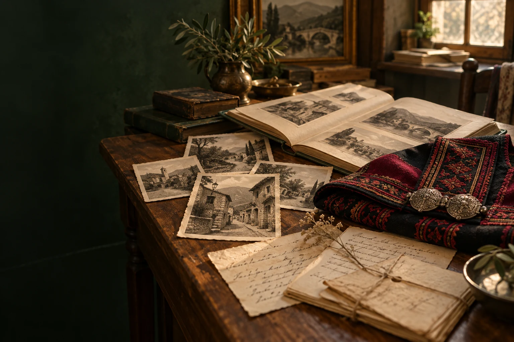
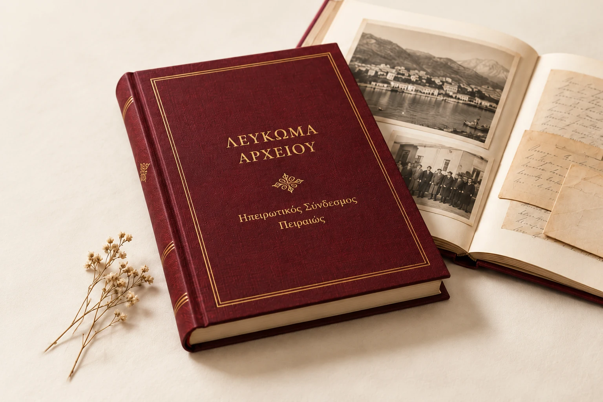
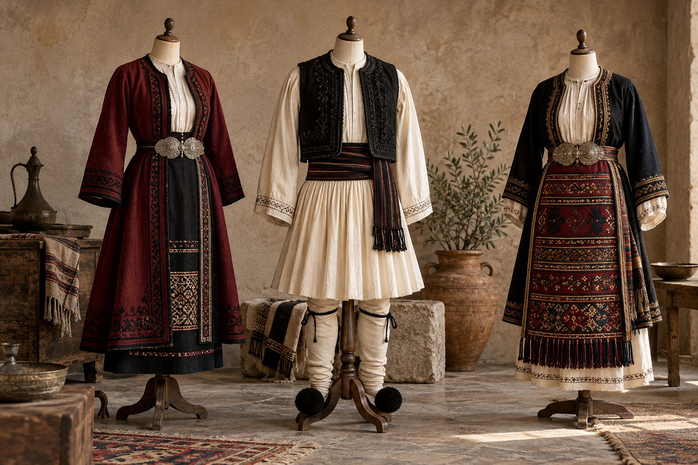
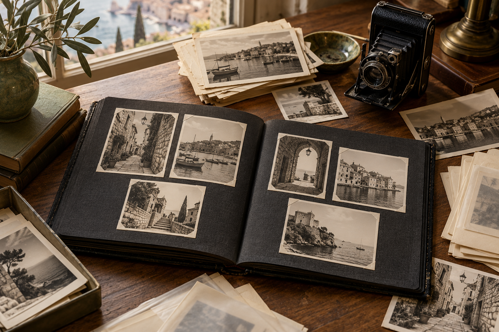

Αρχειακό/Λαογραφικό Υλικό
Στολές, επιστολές και φωτογραφίες κρατούν ζωντανή τη διαδρομή του Ηπειρωτικού Συνδέσμου Πειραιώς. Ένα πλούσιο αρχείο συνδέει τους ανθρώπους, την ηπειρωτική παράδοση και τη ζωή της κοινότητας στον Πειραιά.
Η μνήμη γίνεται
σελίδες.
Επιστολές, έγγραφα και στιγμές μιας συλλογικής διαδρομής. Ένα λεύκωμα που φέρνει το αρχείο του Συνδέσμου κοντά σε όλους.
Ενδεικτικό εξώφυλλο και σελίδες · Το πραγματικό λεύκωμα θα προστεθεί στην ψηφιακή προβολή.

Παραδοσιακές στολές
Οι παραδοσιακές στολές του αρχείου αποτελούν μια ξεχωριστή όψη της πολιτιστικής κληρονομιάς που διαφυλάσσει ο Σύνδεσμος. Τα ενδύματα, η κατασκευή και οι λεπτομέρειές τους προσφέρουν αφετηρίες για τη γνωριμία με την ηπειρωτική ενδυματολογική παράδοση.
Η παρουσίασή τους θα εμπλουτιστεί με φωτογραφίες των ίδιων των αντικειμένων και πληροφορίες για την προέλευση, τα μέρη και τη χρήση κάθε συνόλου.
Διαβάστε επίσης: Φορεσιές & υφαντική της Ηπείρου →Προσωρινές εικόνες δημιουργημένες με AI — δεν αποτελούν τεκμήρια του Συνδέσμου.

Αλληλογραφία από το 1886
Η αλληλογραφία του Συνδέσμου εκτείνεται από το 1886 και συνδέει το αρχείο με τις απαρχές της ιστορίας του. Μέσα από τις επιστολές διατηρούνται οι γραπτές επαφές και η μνήμη της συλλογικής του διαδρομής.
Στη μελλοντική ψηφιακή παρουσίαση, κάθε επιστολή θα συνοδεύεται από τη χρονολόγηση και τα στοιχεία αποστολέα και παραλήπτη που τεκμηριώνονται στο πρωτότυπο, καθώς και από μεταγραφή όπου είναι διαθέσιμη.
Η ιστορική διαδρομή του Συνδέσμου →Προσωρινές εικόνες δημιουργημένες με AI — δεν αποτελούν τεκμήρια του Συνδέσμου.
Φωτογραφικό υλικό
Το φωτογραφικό αρχείο αποτελεί ένα ακόμη σημαντικό μέρος του υλικού του Συνδέσμου. Οι εικόνες προσφέρουν έναν άμεσο τρόπο γνωριμίας με το παρελθόν και τη μνήμη της κοινότητας.
Οι φωτογραφίες θα παρουσιάζονται με όσες πληροφορίες έχουν επιβεβαιωθεί για τα πρόσωπα, τον τόπο, τον χρόνο και την προέλευσή τους, με σεβασμό στα δικαιώματα χρήσης.
Γνωρίστε την Ηπειρωτική Λέσχη →Προσωρινές εικόνες δημιουργημένες με AI — δεν αποτελούν τεκμήρια του Συνδέσμου.

Ένα αρχείο που ανοίγει στο κοινό.
Η σελίδα παρουσιάζει τις βασικές συλλογές του Συνδέσμου. Δεν έχουν ακόμη αναρτηθεί ψηφιοποιημένα τεκμήρια· η περιήγηση στο ίδιο το υλικό θα προστεθεί σταδιακά, με την καταγραφή και την τεκμηρίωσή του.
Επικοινωνία για το αρχείο →